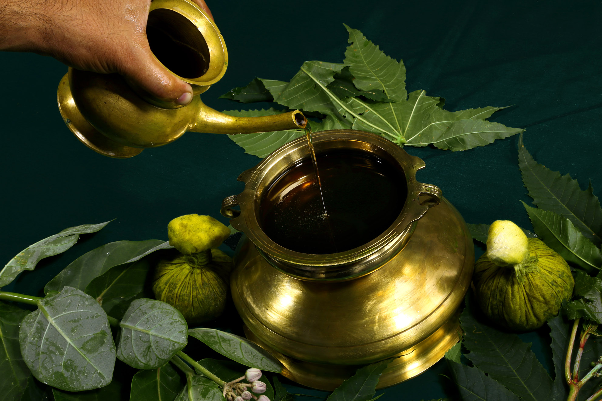
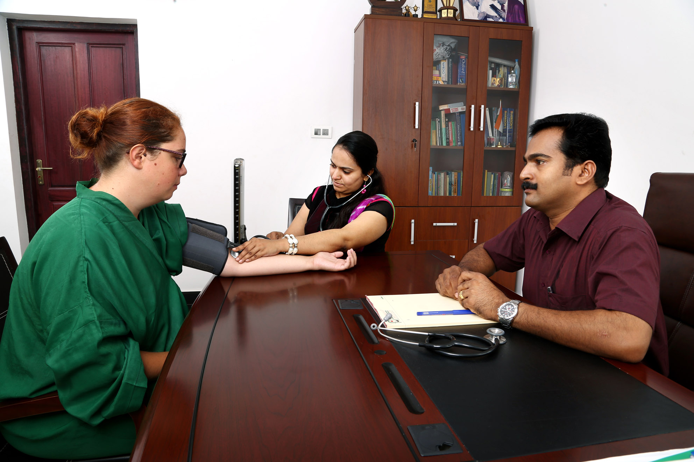

Deluxe numurs
Plašs un gaišs numurs jaunajā klīnikas korpusā ar skatu uz baseinu un dārzu. Augstāks komforta līmenis, moderns interjers un visas nepieciešamās ērtības tiem, kas vēlas ekskluzīvāku pieredzi.
Apskatīt fotogrāfijas →Pančakarma
14. decembris – 28. decembris 2026
Pieteikšanās atvērta
No 2495 € (agrā rezervācija: 2295 €)
PieteiktiesŠī programma ir ceļš, kur soli pa solim Tu attīri ķermeni, nomierini prātu un atver telpu dziļākai klātbūtnei un iekšējai transformācijai.
Ājurvēda ir sena holistiska zinātne no Indijas, kas cilvēku uztver kā vienotu ķermeņa, prāta un gara sistēmu. Tās mērķis nav tikai novērst simptomus, bet atjaunot dabisko līdzsvaru, stiprināt dzīvības enerģiju un aktivizēt organisma pašdziedināšanās spējas, dzīvojot harmonijā ar dabas ritmiem.

Pančakarma ir viena no senākajām un dziļākajām ājurvēdas attīrīšanās un dziedināšanas metodēm, kuras saknes meklējamas tūkstošiem gadu senā tradīcijā.
Tā ne tikai palīdz atbrīvot organismu no uzkrātām slodzēm un toksīniem, bet arī atjauno dabisko enerģijas plūsmu un līdzsvaru, aktivizējot ķermeņa pašdziedināšanās procesus. Atšķirībā no simptomātiskas pieejas, Pančakarma darbojas dziļākajā līmenī — palīdzot atbrīvoties no nelīdzsvarotības cēloņiem.
Programma tiek pielāgota individuāli, un katru dienu iekļauj 3,5–5 stundas rūpīgi izvēlētas terapijas: masāžas, ārstnieciskās procedūras, speciālistu konsultācijas un ārstu uzraudzību. Katram dalībniekam tiek izstrādāts personisks atveseļošanās plāns un piemērota uztura programma.
Šī ir iespēja pilnībā apstāties, veltīt laiku sev un atjaunot ne tikai ķermeni, bet arī prāta un iekšējā stāvokļa līdzsvaru.
Katru dienu Tu saņemsi profesionālu, individuāli pielāgotu atbalstu, kas seko Tava ķermeņa reakcijām un vajadzībām. Apvienojot senās ājurvēdas zināšanas ar mūsdienu izpratni, Tavs atveseļošanās process tiek vadīts ar dziļu uzmanību un rūpību.
Satsangi ir kopā būšanas un sarunu telpa par dzīves būtiskajiem jautājumiem — par apziņu, dvēseli, Dievu un iekšējo ceļu. Šīs tikšanās palīdz radīt skaidrību, dziļāku izpratni un iekšēju mieru.
Katrs ēdiens tiek gatavots ar mērķi atbalstīt attīrīšanās procesu un atjaunot līdzsvaru. Uzturs palīdz harmonizēt gremošanu, stiprināt enerģiju un veidot dabisku viegluma sajūtu ķermenī un prātā.
Atveseļošanās norisinās mierpilnā, dabas ieskautā vidē, kur klusums un daba kļūst par terapijas daļu. Šī vide veicina dziļu relaksāciju un iekšēju līdzsvaru.
Ierobežots digitālo stimulu daudzums palīdz prātam nomierināties un atgriezties klātbūtnē. Bez informācijas pārslodzes uzmanība dabiski vēršas uz iekšpusi — domas kļūst mierīgākas, apziņa skaidrāka.
Ceļojuma laikā apmeklēsi senas, enerģētiski spēcīgas vietas, kur joprojām dzīva Indijas garīgā tradīcija. Šī pieredze padziļina saikni ar sevi un apkārtējo pasauli.
Meditācija un laiks pie jūras palīdz atjaunot iekšējo līdzsvaru, paplašināt sajūtas un piedzīvot dziļu mieru.
Piedzīvosi Pančakarmu — galveno programmas pieredzi, individuāli pielāgotu dziļai ķermeņa attīrīšanai un atjaunošanai.
Soli pa solim Tu atjaunosi ķermeņa dabisko līdzsvaru, apgūsi veselību atbalstošus ieradumus un padziļināti izpratīsi prāta un emociju darbību. Tu atbrīvosies no uzkrātiem iekšējiem modeļiem un blokiem, piedzīvojot arvien lielāku vieglumu, skaidrību un iekšēju mieru.
Šo procesu papildina arī citas pieredzes:
Grupu vada pieredzējuši garīgie skolotāji, kuri daudzu gadu garumā ir padziļināti iepazinuši Indijas garīgās tradīcijas un ājurvēdas prakses.
Studējis Dienvidāzijas valodas, kultūru, vēsturi un ekonomiku. Viņa dziļā interese par Dievu aizveda viņu pie realizēta Meistara Paramahamsas Šri Swami Vishwanandas, kuru viņš šobrīd pārstāv Latvijā un citviet pasaulē. Swami dzīve ir veltīta kalpošanai cilvēkiem — mācot garīguma ceļu caur lūgšanām, Atma Krija jogu, rituāliem un dzīvi apzinātā kopienā.
Atma Krija Jogas un Bhakti Marga mācību pasniedzējs, kā arī garīgo rituālu vadītājs. Viņš palīdz cilvēkiem atrast iekšējo mieru, skaidrību un dziļāku saikni ar sevi.
Daudzu gadu laikā viņi ir izzinājuši un izvērtējuši dažādas Pančakarmas iespējas visā Indijā, meklējot patiesi autentisku un kvalitatīvu pieredzi. Šis retrīts un izvēlētā klīnika ir viņu skatījumā viena no labākajām — vieta, kur apvienojas profesionāla pieeja, autentiskas zināšanas un patiesa dziedināšana.

Mēs dzīvosim klīnikā, kas ir atzīta kā viena no labākajām pasaulē — vietu, kuru rekomendē daudzi, kas tur jau ir bijuši, un kuri regulāri atgriežas, lai uzlabotu savu veselību pēc noslogotas darba ikdienas. Šī ir iespēja uzturēties īstā atveseļošanās un dziedināšanas oāzē.
Dzīvosim komfortablos divvietīgos numuros ar visām ērtībām, ļaujoties pilnīgai atpūtai un ķermeņa atjaunošanai.
Klīnikas teritorijā pieejami trīs dažādi dzīvošanas veidi. Izvēlies sev piemērotāko — no autentiskām Keralas koteedžām līdz plašiem Deluxe numuriem.
Plašs un gaišs numurs jaunajā klīnikas korpusā ar skatu uz baseinu un dārzu. Augstāks komforta līmenis, moderns interjers un visas nepieciešamās ērtības tiem, kas vēlas ekskluzīvāku pieredzi.
Apskatīt fotogrāfijas →
Tradicionālas Keralas stila koteedžas palmu ieskautā dārzā. Autentiska atmosfēra un tieša saikne ar dabu — lieliska izvēle tiem, kas meklē mieru un īpašu kolorītu.
Apskatīt fotogrāfijas →
Komfortabls divvietīgs numurs ar visām nepieciešamajām ērtībām. Vienkāršs, mājīgs un praktisks — iekļauts programmas pamatcenā.
Apskatīt fotogrāfijas →Istabu pieejamība un gala cena tiek precizēta pēc pieteikuma iesniegšanas. Sazinies ar mums, lai izvēlētos sev piemērotāko variantu.
Ģimenes atlaide: papildus 5%, ja piedalās vismaz divi ģimenes locekļi.
Bērniem līdz 18 gadu vecumam: individuāla cena pēc vecuma un procedūrām.
Apmaksa: iespējama pilna apmaksa vai maksājums pa daļām. Pirmā iemaksa: 1000 € līdz 01.07.2026. Atlikušī summa: līdz 14.10.2026.
Piesakies laicīgi — vietu skaits ir ierobežots.
Vai sazinieties tieši: